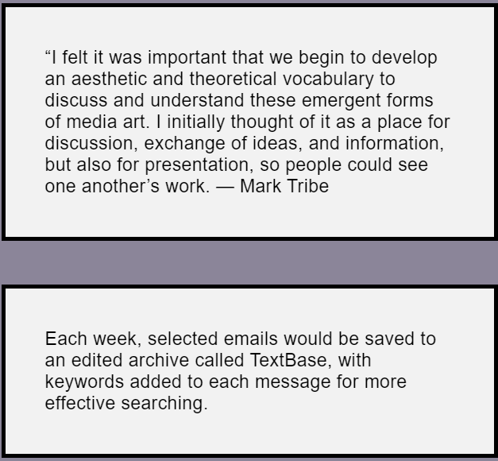

StarryNight

StarryNight was developed as an artistic interface for the curated, online archive of Rhizome’s email discussion list,an important forum for artists working with new forms of media in the late 1990s. Each week, selected messages from the list—including critical exchanges, sharing resources and information, and artwork in email form—were saved to the archive, which was called Textbase.

What is it?
In StarryNight, each email in the archive was represented by a glowing point of light against a dark background, which would increase in brightness each time its corresponding message was accessed in the archive. Users could navigate among them by selecting assigned keywords, which would draw “constellations” connecting related emails in the database.
-Experience-
When a visitor would access an email on Rhizome’s web-based archive, a dot would appear on the black background of StarryNight. With each subsequent visit, it would grow slightly brighter. Users could click a given star, triggering a pop-up menu. They could opt to read the message, which would cause it to appear onscreen, or select a keyword associated with the text.
More info...

StarryNight is both a map and a community record. As a navigation tool, it was impossible to use without leaving a trace of which texts the user would pursue and which they would ignore. https://anthology.rhizome.org/starrynight